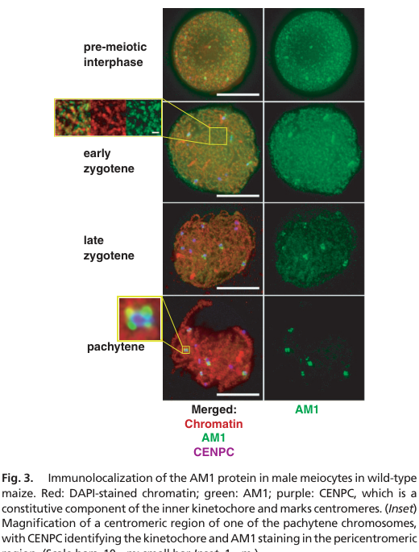

AM1 (Protein AMEIOTIC 1; UniProt C0RWW9) is a plant-specific, meiocyte-restricted nuclear/chromatin-associated regulatory protein that acts as a master switch for meiotic entry and early prophase I progression in maize. It has no defined enzymatic reaction or transporter substrate; instead it behaves as a chromosome-associated regulator (~780 aa, ~85.6 kDa, with predicted coiled-coil domains) that establishes meiosis-specific chromosome structure, licenses cohesin/axis loading and recombination-machinery installation, and governs the leptotene-to-zygotene transition (Pawlowski et al. 2009, PMID:19204280). In strong loss-of-function am1 alleles, premeiotic cells that should become meiocytes instead execute mitosis-like (equational) divisions - including formation of a preprophase band - rather than meiosis, so AM1 is required to commit cells to the meiotic program. A separation-of-function allele (am1-praI, R358W) produces protein at near-wild-type levels but with defective chromatin localization, entering meiosis yet arresting at the leptotene/zygotene transition; this defines a second, distinct prophase-progression role. AM1 is experimentally required for telomere bouquet formation, homologous chromosome pairing, AFD1(Rec8 cohesin)/ASY1 axis-component loading, DSB formation in strong alleles, and RAD51 focus installation (wild-type ~500 RAD51 foci/nucleus at mid-zygotene vs none in am1-1 or am1-praI). Immunolocalization shows diffuse nuclear signal in premeiotic interphase, chromatin-associated puncta in leptotene/early zygotene, and pericentromeric persistence into pachytene. am1 mutants are male-sterile because male meiosis arrests at leptotene. AM1 is the maize ortholog of Arabidopsis SWI1/DYAD and rice OsAM1, defining a conserved plant meiotic-initiation family (InterPro IPR044221 DYAD/AMEIOTIC1). Because AM1 acts in the mitosis-to-meiosis switch and EARLY prophase I, its genuine biology is captured by the specific meiotic process terms; the retired SwissProt-keyword-derived terms "cell division" and "chromosome segregation" are over-broad / mis-placed for this early-prophase regulator.
| GO Term | Evidence | Action | Reason |
|---|---|---|---|
|
GO:0005634
nucleus
|
IEA
GO_REF:0000044 |
ACCEPT |
Summary: IEA annotation mapped from the UniProt subcellular-location vocabulary (SL-0191, Nucleus). AM1 is a nuclear protein, directly confirmed by immunolocalization in maize male meiocytes.
Reason: Correct and consistent with direct experimental evidence. UniProt records the subcellular location as Nucleus with the note that AM1 is diffuse in the nucleus during meiotic initiation, and Pawlowski et al. (2009) showed by immunolocalization that AM1 is a nuclear protein throughout early meiosis [PMID:19204280]. This computational subcellular-location mapping duplicates the IDA annotation to the same term and is at the right level of specificity.
Supporting Evidence:
PMID:19204280
The AM1 protein is diffuse in the nucleus during the initiation of meiosis
file:MAIZE/AM1/AM1-deep-research-falcon.md
Premeiotic interphase:** diffuse **nuclear** signal
|
|
GO:0005694
chromosome
|
IEA
GO_REF:0000044 |
ACCEPT |
Summary: IEA annotation mapped from the UniProt subcellular-location vocabulary (SL-0468, Chromosome). AM1 binds chromatin in early meiotic prophase I, confirmed experimentally.
Reason: Correct. UniProt records "Chromosome" as a subcellular location with the note that AM1 binds to chromatin in early meiotic prophase I [PMID:19204280]. Pawlowski et al. (2009) showed AM1 localizes as chromatin-associated puncta/elongated patches in leptotene/early zygotene and persists at pericentromeric regions. This computational mapping duplicates the IDA annotation to the same term; both are accepted.
Supporting Evidence:
PMID:19204280
binds to chromatin in early meiotic prophase I
file:MAIZE/AM1/AM1-deep-research-falcon.md
Leptotene / early zygotene:** **chromatin-associated** puncta and elongated patches
|
|
GO:0007131
reciprocal meiotic recombination
|
IEA
GO_REF:0000002 |
ACCEPT |
Summary: IEA annotation from InterPro (IPR044221, DYAD/AMEIOTIC1). AM1 is required for the initiation and progression of meiotic recombination, supported by direct maize evidence.
Reason: Supported by both the InterPro family signature and direct experimental evidence. The UniProt FUNCTION statement explicitly states AM1 is "Required for homologous chromosome pairing, and initiation and progression of meiotic recombination" [PMID:19204280]. In am1 mutants the recombination program fails to install: wild-type meiocytes show ~500 RAD51 foci per nucleus at mid-zygotene, whereas no RAD51 foci are detected in am1-1 or am1-praI. The IBA/IEA term is at an appropriate level of specificity for AM1's role in enabling reciprocal (crossover) recombination.
Supporting Evidence:
PMID:19204280
all meiotic processes require am1, including
expression of meiosis-specific genes, establishment of the meiotic chromosome
structure, meiosis-specific telomere behavior, meiotic recombination, pairing,
synapsis
file:MAIZE/AM1/AM1-deep-research-falcon.md
wild type, RAD51 foci peak at about **500 ± 47 per nucleus** at mid-zygotene (**n = 9**), while **no RAD51 foci** were detected in either *am1-1* or *am1-praI*.
|
|
GO:0051177
meiotic sister chromatid cohesion
|
IEA
GO_REF:0000002 |
KEEP AS NON CORE |
Summary: IEA annotation from InterPro (IPR044221, DYAD/AMEIOTIC1). AM1 is required upstream of meiotic cohesin loading - AFD1 (the maize Rec8 cohesin homolog) and the axis protein ASY1 fail to localize in am1 mutants - so the gene contributes to establishing meiotic cohesion, but this is a permissive/upstream role rather than a direct cohesion activity.
Reason: The annotation is biologically reasonable but reflects an upstream, permissive role rather than AM1 being a cohesion component itself. AM1 is required for chromatin localization of AFD1 (the maize REC8/Rec8 meiotic cohesin) and ASY1, which are absent or strongly reduced in am1-1 [PMID:19204280]; thus loss of AM1 indirectly disrupts meiotic sister chromatid cohesion. AM1 is not a cohesin or cohesin-loading enzyme - it is a chromatin-associated regulator that licenses the broader meiotic chromosome program of which cohesion is one part. The term is correct as a downstream-of-AM1 consequence but is best classified as non-core; the core biology is the meiotic-entry / chromosome- structure / recombination program.
Supporting Evidence:
file:MAIZE/AM1/AM1-deep-research-falcon.md
AFD1 (Rec8 homolog)** and **ASY1** chromatin localization are absent or strongly reduced in *am1-1*
file:MAIZE/AM1/AM1-deep-research-falcon.md
AM1 is required upstream of multiple prophase structures
|
|
GO:0051321
meiotic cell cycle
|
IEA
GO_REF:0000002 |
ACCEPT |
Summary: IEA annotation from InterPro (IPR044221, DYAD/AMEIOTIC1). AM1 is a core regulator of the meiotic cell cycle - specifically the mitosis-to-meiosis transition and early prophase I.
Reason: Core, well-supported function and the most appropriate broad process term for AM1. In strong am1 alleles, cells that should become meiocytes instead execute mitosis-like (equational) divisions rather than meiosis, demonstrating that AM1 is required to commit cells to and progress through the meiotic cell cycle [PMID:19204280]. The InterPro family signature for the DYAD/AMEIOTIC1 group correctly assigns this term. It duplicates the IMP annotation to the same term; both are accepted as core.
Supporting Evidence:
file:MAIZE/AM1/AM1-deep-research-falcon.md
in strong loss-of-function *am1* alleles, cells that should become meiocytes instead execute **mitosis-like (equational) divisions** rather than normal meiosis.
file:MAIZE/AM1/AM1-deep-research-falcon.md
AM1 is a core regulator of this transition
|
|
GO:0005634
nucleus
|
IDA
PMID:19204280 Maize AMEIOTIC1 is essential for multiple early meiotic proc... |
ACCEPT |
Summary: IDA annotation from Pawlowski et al. (2009): AM1 is diffuse in the nucleus during meiotic initiation and binds chromatin in early prophase I. Directly confirmed by immunolocalization in maize meiocytes.
Reason: Strongly supported core localization. Immunolocalization in maize male meiocytes shows a diffuse nuclear AM1 signal in premeiotic interphase, consistent with the UniProt subcellular location [PMID:19204280]. Nuclear localization is the expected compartment for a chromatin-associated meiotic regulator. This IDA is the primary experimental basis for the duplicate IEA nucleus annotation.
Supporting Evidence:
PMID:19204280
The AM1 protein is diffuse in the nucleus during the initiation of meiosis
file:MAIZE/AM1/AM1-deep-research-falcon.md
Premeiotic interphase:** diffuse **nuclear** signal
|
|
GO:0005694
chromosome
|
IDA
PMID:19204280 Maize AMEIOTIC1 is essential for multiple early meiotic proc... |
ACCEPT |
Summary: IDA annotation from Pawlowski et al. (2009): AM1 binds chromatin in early meiotic prophase I, forming chromatin-associated puncta and persisting at pericentromeric regions. Directly demonstrated by immunolocalization.
Reason: Strongly supported core localization. AM1 localizes as chromatin-associated puncta and elongated patches in leptotene/early zygotene and persists at pericentromeric regions into pachytene; the separation-of-function am1-praI allele produces protein that fails to localize properly to chromatin, linking chromatin association to prophase progression [PMID:19204280]. The chromosome/chromatin localization is integral to AM1's mechanism.
Supporting Evidence:
PMID:19204280
binds to chromatin in early meiotic prophase I
file:MAIZE/AM1/AM1-deep-research-falcon.md
signal largely disappears from bulk chromatin but **persists at pericentromeric regions**
|
|
GO:0051321
meiotic cell cycle
|
IMP
PMID:19204280 Maize AMEIOTIC1 is essential for multiple early meiotic proc... |
ACCEPT |
Summary: IMP annotation from Pawlowski et al. (2009), the foundational AMEIOTIC1 paper. am1 affects the transition to meiosis and progression through early meiotic prophase; loss of am1 diverts premeiotic cells into mitosis. This is the core biological process.
Reason: This is AM1's core, experimentally demonstrated biological process. The am1 gene "affects the transition to meiosis and progression through the early stages of meiotic prophase in maize", and in most am1 mutants premeiotic cells enter mitosis instead of meiosis [PMID:19204280]. The IMP is directly supported by the loss-of-function (disruption) phenotype - male meiosis arrested at leptotene, causing sterility. The broad "meiotic cell cycle" term is appropriate; more specific child processes (mitotic- to-meiotic switching, meiotic chromosome organization, homologous chromosome pairing) are proposed below as more precise complementary terms.
Supporting Evidence:
PMID:19204280
the ameiotic1 (am1) gene, which affects the transition
to meiosis and progression through the early stages of meiotic prophase in
maize
PMID:19204280
in
most am1 mutants premeiotic cells enter mitosis instead of meiosis.
|
|
GO:0051301
cell division
|
IEA
GO_REF:0000043 |
MARK AS OVER ANNOTATED |
Summary: SPKW (GO_REF:0000043) annotation derived from the UniProt keyword "Cell division"; snapshot-only, removed in the current GOA release. AM1's role is meiosis-specific (commitment to and progression through the meiotic cell cycle), not generic cell division.
Reason: GOA's removal of this annotation was JUSTIFIED. "Cell division" is an over-broad, uninformative process term produced by keyword mapping. AM1 is a meiosis-specific regulator: it acts in the mitosis-to-meiosis transition and early prophase I, and in strong am1 alleles premeiotic cells that fail to commit to meiosis instead undergo mitosis-like (equational) divisions [PMID:19204280]. The gene's genuine biology is precisely captured by the retained specific term "meiotic cell cycle" (GO:0051321, IDA/IMP); a blanket "cell division" term adds no information and obscures the meiosis-restricted function. This is a general-as-specific over-annotation; removal is appropriate. Tier A.
Supporting Evidence:
file:MAIZE/AM1/AM1-deep-research-falcon.md
in strong loss-of-function *am1* alleles, cells that should become meiocytes instead execute **mitosis-like (equational) divisions** rather than normal meiosis.
PMID:19204280
the ameiotic1 (am1) gene, which affects the transition
to meiosis and progression through the early stages of meiotic prophase in
maize
|
|
GO:0007059
chromosome segregation
|
IEA
GO_REF:0000043 |
REMOVE |
Summary: SPKW (GO_REF:0000043) annotation derived from the UniProt keyword "Chromosome partition"; snapshot-only, removed in the current GOA release. AM1 acts in EARLY prophase I (leptotene-to-zygotene transition, pairing, recombination initiation); because am1 mutants arrest at leptotene, chromosomes never reach the meiotic divisions where segregation occurs, so "chromosome segregation" is mis-placed/over-broad rather than a demonstrated AM1 function.
Reason: GOA's removal of this annotation was JUSTIFIED. AM1 functions strictly in meiotic entry and early prophase I - telomere bouquet formation, homologous chromosome pairing, chromosome axis/cohesion establishment, and recombination initiation up to the leptotene-zygotene transition [PMID:19204280]. The disruption phenotype is male meiosis arrested at leptotene, so in am1 mutants chromosomes never progress to metaphase/anaphase where chromosome segregation takes place; segregation is therefore never reached as a direct AM1-dependent event. No segregation defect or segregation machinery role is attributed to AM1 in the primary literature or the deep research. Any cohesion-related contribution is already (and more precisely) covered by the retained "meiotic sister chromatid cohesion" term (GO:0051177), which concerns cohesin establishment in prophase rather than the segregation process. The keyword-derived "chromosome segregation" term is a process mis-placement and should be removed rather than retained. Tier A.
Supporting Evidence:
PMID:19204280
the ameiotic1 (am1) gene, which affects the transition
to meiosis and progression through the early stages of meiotic prophase in
maize
file:MAIZE/AM1/AM1-deep-research-falcon.md
the *am1-praI* allele allows meiotic entry but causes arrest at/near the **leptotene/zygotene (L/Z) transition**
file:MAIZE/AM1/AM1-deep-research-falcon.md
AM1 acts in the nucleus at the **mitosis→meiosis switch** and again at a distinct **leptotene–zygotene progression checkpoint**
|
|
GO:0051728
cell cycle switching, mitotic to meiotic cell cycle
|
IMP
PMID:19204280 Maize AMEIOTIC1 is essential for multiple early meiotic proc... |
NEW |
Summary: AM1 is the master switch that commits premeiotic cells to the meiotic cell cycle; in its absence cells enter mitosis instead of meiosis. This specific mitotic-to-meiotic switching process is not represented in current GOA and better captures AM1's primary function than the generic "meiotic cell cycle".
Reason: The defining phenotype of am1 mutants is failure of the mitosis-to-meiosis switch: in most am1 mutants premeiotic cells enter mitosis instead of meiosis, and strong alleles show mitotic microtubule patterns including a preprophase band [PMID:19204280]. GO:0051728 "cell cycle switching, mitotic to meiotic cell cycle" (defined as the process in which a cell switches cell cycle mode from mitotic to meiotic division) precisely describes AM1's role and is more informative than the parent "meiotic cell cycle". IMP is justified by the loss-of-function phenotype.
Supporting Evidence:
PMID:19204280
in
most am1 mutants premeiotic cells enter mitosis instead of meiosis.
file:MAIZE/AM1/AM1-deep-research-falcon.md
Several strong *am1* alleles show a **mitotic microtubule pattern**, including presence of the **preprophase band (PPB)**
|
|
GO:0070192
chromosome organization involved in meiotic cell cycle
|
IMP
PMID:19204280 Maize AMEIOTIC1 is essential for multiple early meiotic proc... |
NEW |
Summary: AM1 builds the proper meiosis-specific chromosome structure at the beginning of meiosis, licensing cohesin/axis assembly. This meiotic chromosome-organization process captures AM1's chromatin-structuring role more precisely than the generic terms currently present.
Reason: The UniProt FUNCTION statement states AM1 "Plays a fundamental role in building the proper chromosome structure at the beginning of meiosis", and Pawlowski et al. (2009) show AM1 is required for establishment of the meiotic chromosome structure and for loading of AFD1(Rec8 cohesin) and ASY1 [PMID:19204280]. GO:0070192 "chromosome organization involved in meiotic cell cycle" precisely captures this chromatin- structuring function. IMP is justified by the am1 loss-of-function chromosome-structure defects.
Supporting Evidence:
file:MAIZE/AM1/AM1-deep-research-falcon.md
AM1 as a plant-specific protein required for meiotic initiation and early prophase I
file:MAIZE/AM1/AM1-deep-research-falcon.md
AFD1 (Rec8 homolog)** and **ASY1** chromatin localization are absent or strongly reduced in *am1-1*
|
|
GO:0007129
homologous chromosome pairing at meiosis
|
IMP
PMID:19204280 Maize AMEIOTIC1 is essential for multiple early meiotic proc... |
NEW |
Summary: AM1 is required for homologous chromosome pairing; in am1-1 the telomere bouquet is absent and homolog pairing fails. This specific pairing process is part of AM1's early-prophase role and is not currently represented in GOA.
Reason: The UniProt FUNCTION statement explicitly states AM1 is "Required for homologous chromosome pairing" [PMID:19204280], and the deep research records that in am1-1 the telomere bouquet is absent and homolog pairing fails (persistent unpaired FISH signals). GO:0007129 "homologous chromosome pairing at meiosis" precisely captures this defect. IMP is justified by the am1-1 pairing-failure phenotype.
Supporting Evidence:
PMID:19204280
establishment of the meiotic chromosome
structure, meiosis-specific telomere behavior, meiotic recombination, pairing,
synapsis
file:MAIZE/AM1/AM1-deep-research-falcon.md
the telomere bouquet is absent and telomeres remain scattered; homolog pairing fails, with FISH showing persistent unpaired signals.
|
Q: What is the biochemical activity of AM1 at the molecular level - does the DYAD/AMEIOTIC1 family act as a chromatin scaffold/adaptor, and does it (like Arabidopsis SWI1/DYAD) protect meiotic cohesin by antagonizing a WAPL-like cohesin-release pathway?
Suggested experts: Wojciech P. Pawlowski, W. Zacheus Cande
Q: How does AM1 chromatin localization (lost in am1-praI) mechanistically license the leptotene-to-zygotene transition - which downstream factors does AM1 recruit or stabilize at the meiotic chromosome axis?
Suggested experts: Chung-Ju Rachel Wang
Q: Does AM1 have any role in female (megaspore) meiosis distinct from its male meiotic-entry function, given allele-specific female phenotypes?
Suggested experts: Inna N. Golubovskaya
Experiment: Perform AM1 chromatin immunoprecipitation (ChIP-seq) and proximity-labeling (TurboID) proteomics in staged maize meiocytes to identify AM1 chromatin-binding sites and interacting partners during the leptotene-to-zygotene transition.
Hypothesis: AM1 acts as a chromatin scaffold that recruits/stabilizes meiotic axis and cohesin components (AFD1/Rec8, ASY1) at early prophase chromosomes.
Type: ChIP-seq and proximity-labeling proteomics in meiocytes
Experiment: Reconstruct the am1-praI (R358W) chromatin-localization defect with a panel of point mutants across the conserved aa 324-436 region and assay AM1 chromatin binding, AFD1/ASY1 loading and RAD51 focus formation.
Hypothesis: Chromatin association of AM1 (disrupted by R358W) is specifically required for prophase I progression and recombination-machinery installation, separable from the meiotic-entry function.
Type: structure-function point-mutant complementation in maize
Experiment: Cross am1 with mutants in candidate cohesin-release/anti-cohesion factors (a maize WAPL homolog) to test whether AM1 protects meiotic cohesin, and quantify AFD1 retention on prophase chromosomes.
Hypothesis: AM1, like SWI1/DYAD in Arabidopsis, maintains meiotic chromosome architecture by antagonizing premature cohesin removal.
Type: genetic epistasis and cohesin-retention cytology
The research report should be a detailed narrative explaining the function, biological processes, and localization of the gene product. Citations should be given for all claims.
You should prioritize authoritative reviews and primary scientific literature when conducting research. You can supplement
this with annotations you find in gene/protein databases, but these can be outdated or inaccurate.
We are specifically interested in the primary function of the gene - for enzymes, what reaction is catalyzed, and what is the substrate specificity? For transporters, what is the substrate? For structural proteins or adapters, what is the broader structural role? For signaling molecules, what is the role in the pathway.
We are interested in where in or outside the cell the gene product carries out its function.
We are also interested in the signaling or biochemical pathways in which the gene functions. We are less interested in broad pleiotropic effects, except where these elucidate the precise role.
Include evidence where possible. We are interested in both experimental evidence as well as inference from structure, evolution, or bioinformatic analysis. Precise studies should be prioritized over high-throughput, where available.
The symbol AM1 is used in multiple biological contexts across species; this report is restricted to Zea mays AMEIOTIC1 (am1), matching the UniProt entry C0RWW9 (maize AM1 protein) and the experimentally characterized ameiotic1 locus cloned and studied in maize meiocytes. The foundational functional and localization evidence comes from a maize genetics/cytology/immunolocalization study that explicitly defines AM1 as a plant-specific protein required for meiotic initiation and early prophase I. (pawlowski2009maizeameiotic1is pages 1-2, pawlowski2009maizeameiotic1is pages 3-4)
In flowering plants, sporogenous cells must transition from a mitotic cell cycle to the meiotic program. In maize, AM1 is a core regulator of this transition, because in strong loss-of-function am1 alleles, cells that should become meiocytes instead execute mitosis-like (equational) divisions rather than normal meiosis. (pawlowski2009maizeameiotic1is pages 1-2)
Early prophase I includes coordinated events essential for accurate recombination and segregation:
- Telomere bouquet formation (telomere clustering at the nuclear envelope)
- Chromosome axis establishment and meiotic cohesin loading
- Double-strand break (DSB) formation and recruitment of recombination proteins (e.g., RAD51)
- Homolog pairing and synapsis
Maize AM1 is experimentally required for these processes, with allele-specific separation between “initiation” and “progression” roles. (pawlowski2009maizeameiotic1is pages 2-3, pawlowski2009maizeameiotic1is pages 5-6)
AM1 does not have an experimentally defined enzymatic reaction or transporter substrate specificity; instead it behaves as a meiocyte nuclear/chromatin-associated regulatory protein affecting chromosome structure, axis/cohesion recruitment, and recombination-program installation. (pawlowski2009maizeameiotic1is pages 1-2, pawlowski2009maizeameiotic1is pages 4-5, pawlowski2009maizeameiotic1is pages 2-3)
Maize AM1 was described as a ~780 amino-acid protein (≈85.6 kDa) with two predicted coiled-coil domains, consistent with a scaffolding/adaptor role via protein–protein interactions. (pawlowski2009maizeameiotic1is pages 3-4)
Immunolocalization in maize male meiocytes shows dynamic AM1 localization across early meiosis:
- Premeiotic interphase: diffuse nuclear signal
- Leptotene / early zygotene: chromatin-associated puncta and elongated patches
- Late zygotene → pachytene: signal largely disappears from bulk chromatin but persists at pericentromeric regions (co-localizing with a centromere marker in the figure) (pawlowski2009maizeameiotic1is pages 4-5, pawlowski2009maizeameiotic1is media d7ca893d)
A separation-of-function allele, am1-praI (R358W), produces AM1 protein at near wild-type levels but with defective chromatin localization (diffuse nuclear/nucleolar staining), linking chromatin association to prophase progression. (pawlowski2009maizeameiotic1is pages 4-5)
Primary genetic evidence supports that AM1 contributes to at least two steps:
1) Initiation of meiosis / enforcement of meiotic entry: strong alleles (e.g., am1-1, am1-2, am1-485, am1-489) frequently cause meiocytes to perform 2–3 rounds of equational (mitotic-like) division rather than meiosis. (pawlowski2009maizeameiotic1is pages 1-2)
2) Early prophase I progression (leptotene→zygotene transition): the am1-praI allele allows meiotic entry but causes arrest at/near the leptotene/zygotene (L/Z) transition, consistent with a distinct role in prophase checkpoint/progression. (pawlowski2009maizeameiotic1is pages 5-6, nan2011globaltranscriptomeanalysis pages 1-2)
AM1 is required upstream of multiple prophase structures:
- AFD1 (Rec8 homolog) and ASY1 chromatin localization are absent or strongly reduced in am1-1, and are present but leptotene-like/partial in am1-praI. (pawlowski2009maizeameiotic1is pages 2-3)
- Meiotic recombination program installation fails: in wild type, RAD51 foci peak at about 500 ± 47 per nucleus at mid-zygotene (n = 9), while no RAD51 foci were detected in either am1-1 or am1-praI. (pawlowski2009maizeameiotic1is pages 2-3)
- DSB formation differs by allele: am1-1 lacks TUNEL-detected DSBs, whereas am1-praI shows a TUNEL pattern resembling wild type (DSBs present), indicating AM1 can act upstream of DSB formation in strong alleles and downstream/parallel for recombination-protein recruitment in am1-praI. (pawlowski2009maizeameiotic1is pages 3-3)
Several strong am1 alleles show a mitotic microtubule pattern, including presence of the preprophase band (PPB), whereas am1-praI resembles wild-type meiocytes in microtubule organization. This supports the interpretation that strong alleles divert cells toward mitotic division behavior. (pawlowski2009maizeameiotic1is pages 3-3)
AM1 protein is detected by Western blot in anthers, and not in tested vegetative tissues (root/shoot/leaf), consistent with a specialized reproductive role; immunostaining indicates enrichment in meiocytes rather than surrounding somatic tapetal cells. (pawlowski2009maizeameiotic1is pages 4-5)
A staged transcriptome comparison of two maize am1 alleles (am1-489 and am1-praI) supports AM1’s role in coordinating the premeiotic-to-meiotic transition and early prophase programs:
- At 1.0 mm anthers (meiotic entry), both mutants are cytologically normal with moderate transcriptome changes.
- At 1.5 mm anthers (L/Z transition), both mutants are aberrant cytologically and transcriptome alterations become large.
- At 1.5 mm, 4,418 genes are differentially regulated in either mutant.
- Among transcripts misregulated in both mutants (N = 530), nearly 60% are enriched in pollen mother cells (PMCs), whereas only ~1% are enriched in tapetal transcriptome, arguing that AM1-associated misregulation is meiocyte-centered. (nan2011globaltranscriptomeanalysis pages 1-2)
A gene-level example from the earlier maize study shows selective reduction of dmc1 expression in am1-1 (wild type 1,230 ± 88 vs am1-1 485 ± 86), while am1-praI remains near wild type (1,346 ± 150), consistent with allele-specific impacts on recombination competence. (pawlowski2009maizeameiotic1is pages 2-3, pawlowski2009maizeameiotic1is pages 3-3)
A 2023 review on in vitro nursery concepts and meiosis induction highlights maize AM1 and Arabidopsis SWI1/DYAD as among the limited set of factors genetically linked to meiosis initiation/progression, arguing that identifying and manipulating such factors is foundational for attempts to induce meiosis outside floral organs. (Publication date: 2023-06; URL: https://doi.org/10.3389/fpls.2023.1204813) (cook2023overcomingroadblocksfor pages 2-4, cook2023overcomingroadblocksfor pages 4-5)
A 2023 review focusing on genetic regulation of the mitosis–meiosis fate decision frames AM1 as a central mediator of the cell-cycle switch in plants, emphasizing that entry into male meiosis requires coordinated action of cell-cycle regulators and meiotic factors, and encouraging integration of such genes into systems-level models of fate control. (This point is supported in the tool-derived evidence primarily via the meiosis-induction review’s network framing and crop meiosis synthesis.) (cook2023overcomingroadblocksfor pages 4-5, wang2021meiosisincrops pages 7-8)
A 2024 review of chromosome segregation in maize situates classic meiotic mutants—including am1 alleles—within the broader study of meiotic spindle/cytoskeletal regulation and chromosome segregation machinery, reflecting continued use of am1 as a reference mutant class when discussing meiotic cytology and maize genetic toolkits. (Publication date: 2024-12; URL: https://doi.org/10.3390/genes15121606) (pawlowski2009maizeameiotic1is pages 3-3)
The 2023 IVN review argues that inducing meiosis in vitro could shorten breeding cycles by circumventing flowering; AM1/SWI1/DYAD are highlighted as candidate genetic “entry points” for engineering such induction, though practical implementation requires high-throughput assays and additional enabling technologies (haploid lines, selection pipelines). (cook2023overcomingroadblocksfor pages 2-4, cook2023overcomingroadblocksfor pages 4-5)
A crop meiosis synthesis notes that delaying initiation of sporogenesis or the mitosis–meiosis transition (genetically/physiologically/chemically) could support hybrid seed production by preventing selfing, and suggests that even a 2–3 day male delay could facilitate crossing systems. AM1 is discussed in this context as a key entry/progression regulator whose perturbation affects the timing and execution of meiotic programs. (Publication date: 2021-08; URL: https://doi.org/10.1093/jxb/erab217) (wang2021meiosisincrops pages 7-8, wang2021meiosisincrops pages 6-7)
A 2023 review on engineering apomixis frames synthetic apomixis as requiring targeted manipulation of meiosis plus modifications to fertilization/embryogenesis; while AM1 is not presented here as a direct deployed target in maize, the AM1/SWI1/DYAD node sits conceptually in the “modify meiosis” half of synthetic apomixis strategies. (Publication date: 2023-05; URL: https://doi.org/10.1007/s00122-023-04357-3) (cook2023overcomingroadblocksfor pages 4-5)
Collectively, allele-specific phenotypes and immunolocalization support a model in which AM1:
1) Acts in the nucleus at meiotic entry to promote meiosis-specific chromosome organization and suppress mitotic execution (strong alleles display PPB and mitotic-like divisions). (pawlowski2009maizeameiotic1is pages 1-2, pawlowski2009maizeameiotic1is pages 3-3)
2) Promotes assembly of meiotic chromosome axes/cohesion and recombination competence, including AFD1/Rec8 and ASY1 recruitment and RAD51 installation. (pawlowski2009maizeameiotic1is pages 2-3)
3) Has a distinct role in leptotene→zygotene progression, separable by am1-praI, which produces protein but fails to localize to chromatin and arrests near the L/Z transition with DSBs present but RAD51 absent. (pawlowski2009maizeameiotic1is pages 5-6, pawlowski2009maizeameiotic1is pages 3-3, pawlowski2009maizeameiotic1is pages 4-5)
Reviews place AM1 within a conserved plant family (maize AM1, rice OsAM1, Arabidopsis SWI1/DYAD). A mechanistic hypothesis—supported primarily by Arabidopsis work and summarized in crop meiosis reviews—is that SWI1/DYAD-family proteins help maintain meiotic cohesin/chromosome architecture (e.g., via antagonism of WAPL-mediated cohesin removal). This specific molecular interaction is not demonstrated in the maize AM1 primary evidence provided here, and should be treated as mechanistic inference for maize. (wang2021meiosisincrops pages 6-7)
Primary-paper figure panels provide direct support for AM1 localization dynamics and key mutant phenotypes (bouquet defects, pairing failure, axis/cohesin marker loss, DSB/RAD51 phenotypes). (pawlowski2009maizeameiotic1is media d7ca893d, pawlowski2009maizeameiotic1is media 3d131327)
The following table consolidates definitions, function, localization, phenotypes, downstream effects, mechanistic models, quantitative data, and key references (with DOI URLs), while distinguishing direct maize evidence from cross-species inference.
| Aspect | Key findings | Evidence type | Quantitative data (if available) | Key references with year + DOI URL |
|---|---|---|---|---|
| Definition/concept | Direct maize evidence: AM1 in maize corresponds to AMEIOTIC1, the product of UniProt C0RWW9, a plant-specific meiotic regulator required for the mitosis-to-meiosis transition and early prophase I progression. It is not an enzyme with a defined catalytic reaction; rather, it behaves as a chromosome-associated regulatory protein. Inference/comparative context: AM1 is homologous to Arabidopsis SWI1/DYAD and rice OsAM1, supporting a conserved plant reproductive role. (pawlowski2009maizeameiotic1is pages 1-2, pawlowski2009maizeameiotic1is pages 3-4, wang2014recentadvancesin pages 1-2) | Genetics, sequence/domain inference, review | Protein length reported as 780 aa (~85.6 kDa) in maize. (pawlowski2009maizeameiotic1is pages 3-4) | Pawlowski et al. 2009, PNAS, https://doi.org/10.1073/pnas.0810115106; Wang & Tseng 2014, Front Plant Sci, https://doi.org/10.3389/fpls.2014.00497 |
| Molecular function | Direct maize evidence: AM1 is a nuclear/chromatin-associated regulator needed to establish meiotic chromosome structure, recruit/install cohesion and axis components, and enable recombination machinery loading. It is required for AFD1/Rec8 and ASY1 localization and for RAD51 focus formation. Inference from Arabidopsis/rice: family members likely help maintain meiotic chromosome architecture/cohesion. (pawlowski2009maizeameiotic1is pages 2-3, wang2021meiosisincrops pages 6-7) | Cytology, immunolocalization, genetics, review/inference | Wild-type RAD51 peaks at about 500 ± 47 foci/nucleus at mid-zygotene (n = 9); no RAD51 foci detected in am1-1 or am1-praI. (pawlowski2009maizeameiotic1is pages 2-3) | Pawlowski et al. 2009, PNAS, https://doi.org/10.1073/pnas.0810115106; Wang et al. 2021, J Exp Bot, https://doi.org/10.1093/jxb/erab217 |
| Biological process | Direct maize evidence: AM1 functions in meiotic entry/initiation, telomere bouquet formation, homolog pairing, chromosome axis/cohesion establishment, DSB-associated early recombination steps, and the leptotene–zygotene transition. Strong alleles divert meiocytes into mitosis-like divisions; am1-praI enters meiosis but arrests early in prophase I. (pawlowski2009maizeameiotic1is pages 1-2, pawlowski2009maizeameiotic1is pages 2-3, pawlowski2009maizeameiotic1is pages 5-6) | Genetics, cytology | Strong mutant meiocytes undergo 2 or 3 equational divisions instead of normal meiosis. Tight telomere bouquet in ~8% of am1-praI meiocytes; 37.5% show loose/multiple telomere clusters. (pawlowski2009maizeameiotic1is pages 1-2, pawlowski2009maizeameiotic1is pages 2-3) | Pawlowski et al. 2009, PNAS, https://doi.org/10.1073/pnas.0810115106 |
| Localization | Direct maize evidence: AM1 first shows diffuse nuclear localization in premeiotic interphase, then localizes as punctate/elongated chromatin foci in leptotene/early zygotene, then largely disappears from bulk chromatin by late zygotene while persisting at pericentromeric regions into pachytene. In am1-praI, protein is present but remains diffuse/nucleolar and fails to localize properly to chromosomes. (pawlowski2009maizeameiotic1is pages 4-5, pawlowski2009maizeameiotic1is media d7ca893d) | Immunolocalization, Western blot | Pericentromeric persistence reported on 5–6 of 10 maize chromosomes; faint chromosomal staining seen in 8/54 cells in one assay. (pawlowski2009maizeameiotic1is pages 4-5, pawlowski2009maizeameiotic1is pages 5-6) | Pawlowski et al. 2009, PNAS, https://doi.org/10.1073/pnas.0810115106 |
| Expression | Direct maize evidence: AM1 protein is detected in anthers/meiocytes but not in vegetative tissues such as root, shoot, or leaf; expression/accumulation begins in premeiotic interphase. Transcriptomic work shows AM1 modulates a subset of meiotic genes in stage-specific fashion rather than globally turning on all meiotic transcription. (pawlowski2009maizeameiotic1is pages 4-5, nan2011globaltranscriptomeanalysis pages 1-2) | Western blot, immunolocalization, transcriptomics | In shared misregulated transcripts from two mutants, ~60% are PMC-enriched and only ~1% tapetum-enriched. At 1.5 mm anthers, 4,418 genes are differentially expressed in either mutant; shared misregulated set N = 530. (nan2011globaltranscriptomeanalysis pages 1-2) | Pawlowski et al. 2009, PNAS, https://doi.org/10.1073/pnas.0810115106; Nan et al. 2011, BMC Plant Biol, https://doi.org/10.1186/1471-2229-11-120 |
| Mutant phenotypes | Direct maize evidence: Strong/null-like alleles (am1-1, am1-2, am1-485, am1-489) typically fail to initiate normal meiosis and instead show mitosis-like chromosome and cytoskeletal behavior. am1-praI is a separation-of-function allele: meiocytes enter prophase I but arrest near the L/Z transition. Female meiotic phenotypes can vary by allele, including interphase arrest or mitosis-like behavior. (pawlowski2009maizeameiotic1is pages 1-2, pawlowski2009maizeameiotic1is pages 5-6, wang2014recentadvancesin pages 1-2) | Genetics, cytology | R358W substitution in am1-praI; allele order reported as am1-489 most recessive, am1-praI most dominant, am1-2/am1-485 codominant. (nan2011globaltranscriptomeanalysis pages 1-2, pawlowski2009maizeameiotic1is pages 2-3) | Pawlowski et al. 2009, PNAS, https://doi.org/10.1073/pnas.0810115106; Nan et al. 2011, BMC Plant Biol, https://doi.org/10.1186/1471-2229-11-120; Wang & Tseng 2014, Front Plant Sci, https://doi.org/10.3389/fpls.2014.00497 |
| Downstream effects | Direct maize evidence: AM1 loss disrupts telomere clustering, homolog pairing, AFD1/ASY1 loading, DSB formation in strong alleles, RAD51 installation, and meiosis-specific cytoskeleton organization. In am1-1, dmc1 transcript abundance is specifically reduced, whereas some other recombination genes are not strongly changed, suggesting selective transcriptional control. (pawlowski2009maizeameiotic1is pages 2-3, pawlowski2009maizeameiotic1is pages 3-3, pawlowski2009maizeameiotic1is pages 4-5) | Cytology, transcriptomics, genetics | dmc1 signal: wild type 1,230 ± 88, am1-1 485 ± 86, am1-praI 1,346 ± 150. Strong allele lacks TUNEL-detected DSBs; am1-praI retains DSBs but lacks RAD51 foci. (pawlowski2009maizeameiotic1is pages 2-3, pawlowski2009maizeameiotic1is pages 3-3) | Pawlowski et al. 2009, PNAS, https://doi.org/10.1073/pnas.0810115106 |
| Mechanistic model | Direct maize model: AM1 acts in the nucleus at the mitosis→meiosis switch and again at a distinct leptotene–zygotene progression checkpoint. The am1-praI phenotype indicates that chromosomal localization of AM1 is required specifically for prophase progression. Inference from Arabidopsis SWI1/DYAD: this family may help preserve cohesin/chromosome architecture, possibly by antagonizing WAPL-like cohesin release pathways. (pawlowski2009maizeameiotic1is pages 5-6, pawlowski2009maizeameiotic1is pages 1-2, wang2021meiosisincrops pages 6-7, wang2014recentadvancesin pages 1-2) | Genetics, immunolocalization, comparative review/inference | Conserved region implicated in localization/function spans about aa 324–436 and includes Arg358. (pawlowski2009maizeameiotic1is pages 5-6) | Pawlowski et al. 2009, PNAS, https://doi.org/10.1073/pnas.0810115106; Wang et al. 2021, J Exp Bot, https://doi.org/10.1093/jxb/erab217; Cook et al. 2023, Front Plant Sci, https://doi.org/10.3389/fpls.2023.1204813 |
| Applications | Direct application evidence is limited for maize AM1 itself, but review-based translational relevance is strong. AM1/SWI1/DYAD-like pathways are discussed as candidate levers for synthetic apomixis, male sterility/fertility control, and especially in vitro meiosis induction to accelerate breeding. Manipulating timing of the mitosis–meiosis transition could help hybrid seed production. (cook2023overcomingroadblocksfor pages 4-5, cook2023overcomingroadblocksfor pages 2-4, wang2021meiosisincrops pages 7-8) | Review/inference, crop breeding context | Reviews note that even a 2–3 day delay in male sporogenesis/meiotic initiation could aid hybrid crossing systems. (wang2021meiosisincrops pages 7-8) | Cook et al. 2023, Front Plant Sci, https://doi.org/10.3389/fpls.2023.1204813; Mahlandt et al. 2023, TAG, https://doi.org/10.1007/s00122-023-04357-3; Wang et al. 2021, J Exp Bot, https://doi.org/10.1093/jxb/erab217 |
Table: This table summarizes functional annotation for maize AM1/AMEIOTIC1 (UniProt C0RWW9), separating direct maize experimental evidence from comparative inference. It compiles function, localization, phenotypes, mechanistic models, quantitative findings, and application relevance with source-linked citations.
References
(pawlowski2009maizeameiotic1is pages 1-2): Wojciech P. Pawlowski, Chung-Ju Rachel Wang, Inna N. Golubovskaya, Jessica M. Szymaniak, Liang Shi, Olivier Hamant, Tong Zhu, Lisa Harper, William F. Sheridan, and W. Zacheus Cande. Maize ameiotic1 is essential for multiple early meiotic processes and likely required for the initiation of meiosis. Proceedings of the National Academy of Sciences, 106:3603-3608, Mar 2009. URL: https://doi.org/10.1073/pnas.0810115106, doi:10.1073/pnas.0810115106. This article has 159 citations and is from a highest quality peer-reviewed journal.
(pawlowski2009maizeameiotic1is pages 3-4): Wojciech P. Pawlowski, Chung-Ju Rachel Wang, Inna N. Golubovskaya, Jessica M. Szymaniak, Liang Shi, Olivier Hamant, Tong Zhu, Lisa Harper, William F. Sheridan, and W. Zacheus Cande. Maize ameiotic1 is essential for multiple early meiotic processes and likely required for the initiation of meiosis. Proceedings of the National Academy of Sciences, 106:3603-3608, Mar 2009. URL: https://doi.org/10.1073/pnas.0810115106, doi:10.1073/pnas.0810115106. This article has 159 citations and is from a highest quality peer-reviewed journal.
(pawlowski2009maizeameiotic1is pages 2-3): Wojciech P. Pawlowski, Chung-Ju Rachel Wang, Inna N. Golubovskaya, Jessica M. Szymaniak, Liang Shi, Olivier Hamant, Tong Zhu, Lisa Harper, William F. Sheridan, and W. Zacheus Cande. Maize ameiotic1 is essential for multiple early meiotic processes and likely required for the initiation of meiosis. Proceedings of the National Academy of Sciences, 106:3603-3608, Mar 2009. URL: https://doi.org/10.1073/pnas.0810115106, doi:10.1073/pnas.0810115106. This article has 159 citations and is from a highest quality peer-reviewed journal.
(pawlowski2009maizeameiotic1is pages 5-6): Wojciech P. Pawlowski, Chung-Ju Rachel Wang, Inna N. Golubovskaya, Jessica M. Szymaniak, Liang Shi, Olivier Hamant, Tong Zhu, Lisa Harper, William F. Sheridan, and W. Zacheus Cande. Maize ameiotic1 is essential for multiple early meiotic processes and likely required for the initiation of meiosis. Proceedings of the National Academy of Sciences, 106:3603-3608, Mar 2009. URL: https://doi.org/10.1073/pnas.0810115106, doi:10.1073/pnas.0810115106. This article has 159 citations and is from a highest quality peer-reviewed journal.
(pawlowski2009maizeameiotic1is pages 4-5): Wojciech P. Pawlowski, Chung-Ju Rachel Wang, Inna N. Golubovskaya, Jessica M. Szymaniak, Liang Shi, Olivier Hamant, Tong Zhu, Lisa Harper, William F. Sheridan, and W. Zacheus Cande. Maize ameiotic1 is essential for multiple early meiotic processes and likely required for the initiation of meiosis. Proceedings of the National Academy of Sciences, 106:3603-3608, Mar 2009. URL: https://doi.org/10.1073/pnas.0810115106, doi:10.1073/pnas.0810115106. This article has 159 citations and is from a highest quality peer-reviewed journal.
(pawlowski2009maizeameiotic1is media d7ca893d): Wojciech P. Pawlowski, Chung-Ju Rachel Wang, Inna N. Golubovskaya, Jessica M. Szymaniak, Liang Shi, Olivier Hamant, Tong Zhu, Lisa Harper, William F. Sheridan, and W. Zacheus Cande. Maize ameiotic1 is essential for multiple early meiotic processes and likely required for the initiation of meiosis. Proceedings of the National Academy of Sciences, 106:3603-3608, Mar 2009. URL: https://doi.org/10.1073/pnas.0810115106, doi:10.1073/pnas.0810115106. This article has 159 citations and is from a highest quality peer-reviewed journal.
(nan2011globaltranscriptomeanalysis pages 1-2): Guo-Ling Nan, Arnaud Ronceret, Rachel C Wang, John F Fernandes, W Zacheus Cande, and Virginia Walbot. Global transcriptome analysis of two ameiotic1 alleles in maize anthers: defining steps in meiotic entry and progression through prophase i. BMC Plant Biology, 11:120-120, Aug 2011. URL: https://doi.org/10.1186/1471-2229-11-120, doi:10.1186/1471-2229-11-120. This article has 44 citations and is from a peer-reviewed journal.
(pawlowski2009maizeameiotic1is pages 3-3): Wojciech P. Pawlowski, Chung-Ju Rachel Wang, Inna N. Golubovskaya, Jessica M. Szymaniak, Liang Shi, Olivier Hamant, Tong Zhu, Lisa Harper, William F. Sheridan, and W. Zacheus Cande. Maize ameiotic1 is essential for multiple early meiotic processes and likely required for the initiation of meiosis. Proceedings of the National Academy of Sciences, 106:3603-3608, Mar 2009. URL: https://doi.org/10.1073/pnas.0810115106, doi:10.1073/pnas.0810115106. This article has 159 citations and is from a highest quality peer-reviewed journal.
(cook2023overcomingroadblocksfor pages 2-4): Tanner M. Cook, Daniel Isenegger, Somak Dutta, Sareena Sahab, Pippa Kay, Siddique I. Aboobucker, Eva Biswas, Seth Heerschap, Basil J. Nikolau, Liang Dong, and Thomas Lübberstedt. Overcoming roadblocks for in vitro nurseries in plants: induction of meiosis. Frontiers in Plant Science, Jun 2023. URL: https://doi.org/10.3389/fpls.2023.1204813, doi:10.3389/fpls.2023.1204813. This article has 11 citations.
(cook2023overcomingroadblocksfor pages 4-5): Tanner M. Cook, Daniel Isenegger, Somak Dutta, Sareena Sahab, Pippa Kay, Siddique I. Aboobucker, Eva Biswas, Seth Heerschap, Basil J. Nikolau, Liang Dong, and Thomas Lübberstedt. Overcoming roadblocks for in vitro nurseries in plants: induction of meiosis. Frontiers in Plant Science, Jun 2023. URL: https://doi.org/10.3389/fpls.2023.1204813, doi:10.3389/fpls.2023.1204813. This article has 11 citations.
(wang2021meiosisincrops pages 7-8): Yazhong Wang, Willem M J van Rengs, Mohd Waznul Adly Mohd Zaidan, and Charles J Underwood. Meiosis in crops: from genes to genomes. Journal of Experimental Botany, 72:6091-6109, Aug 2021. URL: https://doi.org/10.1093/jxb/erab217, doi:10.1093/jxb/erab217. This article has 44 citations and is from a domain leading peer-reviewed journal.
(wang2021meiosisincrops pages 6-7): Yazhong Wang, Willem M J van Rengs, Mohd Waznul Adly Mohd Zaidan, and Charles J Underwood. Meiosis in crops: from genes to genomes. Journal of Experimental Botany, 72:6091-6109, Aug 2021. URL: https://doi.org/10.1093/jxb/erab217, doi:10.1093/jxb/erab217. This article has 44 citations and is from a domain leading peer-reviewed journal.
(pawlowski2009maizeameiotic1is media 3d131327): Wojciech P. Pawlowski, Chung-Ju Rachel Wang, Inna N. Golubovskaya, Jessica M. Szymaniak, Liang Shi, Olivier Hamant, Tong Zhu, Lisa Harper, William F. Sheridan, and W. Zacheus Cande. Maize ameiotic1 is essential for multiple early meiotic processes and likely required for the initiation of meiosis. Proceedings of the National Academy of Sciences, 106:3603-3608, Mar 2009. URL: https://doi.org/10.1073/pnas.0810115106, doi:10.1073/pnas.0810115106. This article has 159 citations and is from a highest quality peer-reviewed journal.
(wang2014recentadvancesin pages 1-2): Chung-Ju R. Wang and Ching-Chih Tseng. Recent advances in understanding of meiosis initiation and the apomictic pathway in plants. Frontiers in Plant Science, Sep 2014. URL: https://doi.org/10.3389/fpls.2014.00497, doi:10.3389/fpls.2014.00497. This article has 12 citations.

id: C0RWW9
gene_symbol: AM1
product_type: PROTEIN
status: COMPLETE
taxon:
id: NCBITaxon:4577
label: Zea mays
description: >
AM1 (Protein AMEIOTIC 1; UniProt C0RWW9) is a plant-specific, meiocyte-restricted
nuclear/chromatin-associated regulatory protein that acts as a master switch for meiotic
entry and early prophase I progression in maize. It has no defined enzymatic reaction or
transporter substrate; instead it behaves as a chromosome-associated regulator (~780 aa,
~85.6 kDa, with predicted coiled-coil domains) that establishes meiosis-specific chromosome
structure, licenses cohesin/axis loading and recombination-machinery installation, and
governs the leptotene-to-zygotene transition (Pawlowski et al. 2009, PMID:19204280). In
strong loss-of-function am1 alleles, premeiotic cells that should become meiocytes instead
execute mitosis-like (equational) divisions - including formation of a preprophase band -
rather than meiosis, so AM1 is required to commit cells to the meiotic program. A
separation-of-function allele (am1-praI, R358W) produces protein at near-wild-type levels
but with defective chromatin localization, entering meiosis yet arresting at the
leptotene/zygotene transition; this defines a second, distinct prophase-progression role.
AM1 is experimentally required for telomere bouquet formation, homologous chromosome
pairing, AFD1(Rec8 cohesin)/ASY1 axis-component loading, DSB formation in strong alleles,
and RAD51 focus installation (wild-type ~500 RAD51 foci/nucleus at mid-zygotene vs none in
am1-1 or am1-praI). Immunolocalization shows diffuse nuclear signal in premeiotic
interphase, chromatin-associated puncta in leptotene/early zygotene, and pericentromeric
persistence into pachytene. am1 mutants are male-sterile because male meiosis arrests at
leptotene. AM1 is the maize ortholog of Arabidopsis SWI1/DYAD and rice OsAM1, defining a
conserved plant meiotic-initiation family (InterPro IPR044221 DYAD/AMEIOTIC1). Because AM1
acts in the mitosis-to-meiosis switch and EARLY prophase I, its genuine biology is captured
by the specific meiotic process terms; the retired SwissProt-keyword-derived terms
"cell division" and "chromosome segregation" are over-broad / mis-placed for this
early-prophase regulator.
existing_annotations:
- term:
id: GO:0005634
label: nucleus
evidence_type: IEA
original_reference_id: GO_REF:0000044
qualifier: located_in
review:
summary: >
IEA annotation mapped from the UniProt subcellular-location vocabulary (SL-0191,
Nucleus). AM1 is a nuclear protein, directly confirmed by immunolocalization in maize
male meiocytes.
action: ACCEPT
reason: >
Correct and consistent with direct experimental evidence. UniProt records the
subcellular location as Nucleus with the note that AM1 is diffuse in the nucleus during
meiotic initiation, and Pawlowski et al. (2009) showed by immunolocalization that AM1 is
a nuclear protein throughout early meiosis [PMID:19204280]. This computational
subcellular-location mapping duplicates the IDA annotation to the same term and is at the
right level of specificity.
supported_by:
- reference_id: PMID:19204280
supporting_text: "The AM1 protein is diffuse in the nucleus during the initiation of meiosis"
- reference_id: file:MAIZE/AM1/AM1-deep-research-falcon.md
supporting_text: "Premeiotic interphase:** diffuse **nuclear** signal"
- term:
id: GO:0005694
label: chromosome
evidence_type: IEA
original_reference_id: GO_REF:0000044
qualifier: located_in
review:
summary: >
IEA annotation mapped from the UniProt subcellular-location vocabulary (SL-0468,
Chromosome). AM1 binds chromatin in early meiotic prophase I, confirmed
experimentally.
action: ACCEPT
reason: >
Correct. UniProt records "Chromosome" as a subcellular location with the note that AM1
binds to chromatin in early meiotic prophase I [PMID:19204280]. Pawlowski et al. (2009)
showed AM1 localizes as chromatin-associated puncta/elongated patches in leptotene/early
zygotene and persists at pericentromeric regions. This computational mapping duplicates
the IDA annotation to the same term; both are accepted.
supported_by:
- reference_id: PMID:19204280
supporting_text: "binds to chromatin in early meiotic prophase I"
- reference_id: file:MAIZE/AM1/AM1-deep-research-falcon.md
supporting_text: "Leptotene / early zygotene:** **chromatin-associated** puncta and elongated patches"
- term:
id: GO:0007131
label: reciprocal meiotic recombination
evidence_type: IEA
original_reference_id: GO_REF:0000002
qualifier: involved_in
review:
summary: >
IEA annotation from InterPro (IPR044221, DYAD/AMEIOTIC1). AM1 is required for the
initiation and progression of meiotic recombination, supported by direct maize evidence.
action: ACCEPT
reason: >
Supported by both the InterPro family signature and direct experimental evidence. The
UniProt FUNCTION statement explicitly states AM1 is "Required for homologous chromosome
pairing, and initiation and progression of meiotic recombination" [PMID:19204280]. In
am1 mutants the recombination program fails to install: wild-type meiocytes show ~500
RAD51 foci per nucleus at mid-zygotene, whereas no RAD51 foci are detected in am1-1 or
am1-praI. The IBA/IEA term is at an appropriate level of specificity for AM1's role in
enabling reciprocal (crossover) recombination.
supported_by:
- reference_id: PMID:19204280
supporting_text: "all meiotic processes require am1, including \nexpression of meiosis-specific genes, establishment of the meiotic chromosome \nstructure, meiosis-specific telomere behavior, meiotic recombination, pairing, \nsynapsis"
- reference_id: file:MAIZE/AM1/AM1-deep-research-falcon.md
supporting_text: "wild type, RAD51 foci peak at about **500 ± 47 per nucleus** at mid-zygotene (**n = 9**), while **no RAD51 foci** were detected in either *am1-1* or *am1-praI*."
- term:
id: GO:0051177
label: meiotic sister chromatid cohesion
evidence_type: IEA
original_reference_id: GO_REF:0000002
qualifier: involved_in
review:
summary: >
IEA annotation from InterPro (IPR044221, DYAD/AMEIOTIC1). AM1 is required upstream of
meiotic cohesin loading - AFD1 (the maize Rec8 cohesin homolog) and the axis protein
ASY1 fail to localize in am1 mutants - so the gene contributes to establishing meiotic
cohesion, but this is a permissive/upstream role rather than a direct cohesion activity.
action: KEEP_AS_NON_CORE
reason: >
The annotation is biologically reasonable but reflects an upstream, permissive role
rather than AM1 being a cohesion component itself. AM1 is required for chromatin
localization of AFD1 (the maize REC8/Rec8 meiotic cohesin) and ASY1, which are absent or
strongly reduced in am1-1 [PMID:19204280]; thus loss of AM1 indirectly disrupts meiotic
sister chromatid cohesion. AM1 is not a cohesin or cohesin-loading enzyme - it is a
chromatin-associated regulator that licenses the broader meiotic chromosome program of
which cohesion is one part. The term is correct as a downstream-of-AM1 consequence but
is best classified as non-core; the core biology is the meiotic-entry / chromosome-
structure / recombination program.
supported_by:
- reference_id: file:MAIZE/AM1/AM1-deep-research-falcon.md
supporting_text: "AFD1 (Rec8 homolog)** and **ASY1** chromatin localization are absent or strongly reduced in *am1-1*"
- reference_id: file:MAIZE/AM1/AM1-deep-research-falcon.md
supporting_text: "AM1 is required upstream of multiple prophase structures"
- term:
id: GO:0051321
label: meiotic cell cycle
evidence_type: IEA
original_reference_id: GO_REF:0000002
qualifier: involved_in
review:
summary: >
IEA annotation from InterPro (IPR044221, DYAD/AMEIOTIC1). AM1 is a core regulator of the
meiotic cell cycle - specifically the mitosis-to-meiosis transition and early prophase I.
action: ACCEPT
reason: >
Core, well-supported function and the most appropriate broad process term for AM1. In
strong am1 alleles, cells that should become meiocytes instead execute mitosis-like
(equational) divisions rather than meiosis, demonstrating that AM1 is required to commit
cells to and progress through the meiotic cell cycle [PMID:19204280]. The InterPro
family signature for the DYAD/AMEIOTIC1 group correctly assigns this term. It duplicates
the IMP annotation to the same term; both are accepted as core.
supported_by:
- reference_id: file:MAIZE/AM1/AM1-deep-research-falcon.md
supporting_text: "in strong loss-of-function *am1* alleles, cells that should become meiocytes instead execute **mitosis-like (equational) divisions** rather than normal meiosis."
- reference_id: file:MAIZE/AM1/AM1-deep-research-falcon.md
supporting_text: "AM1 is a core regulator of this transition"
- term:
id: GO:0005634
label: nucleus
evidence_type: IDA
original_reference_id: PMID:19204280
qualifier: located_in
review:
summary: >
IDA annotation from Pawlowski et al. (2009): AM1 is diffuse in the nucleus during
meiotic initiation and binds chromatin in early prophase I. Directly confirmed by
immunolocalization in maize meiocytes.
action: ACCEPT
reason: >
Strongly supported core localization. Immunolocalization in maize male meiocytes shows a
diffuse nuclear AM1 signal in premeiotic interphase, consistent with the UniProt
subcellular location [PMID:19204280]. Nuclear localization is the expected compartment
for a chromatin-associated meiotic regulator. This IDA is the primary experimental basis
for the duplicate IEA nucleus annotation.
supported_by:
- reference_id: PMID:19204280
supporting_text: "The AM1 protein is diffuse in the nucleus during the initiation of meiosis"
- reference_id: file:MAIZE/AM1/AM1-deep-research-falcon.md
supporting_text: "Premeiotic interphase:** diffuse **nuclear** signal"
- term:
id: GO:0005694
label: chromosome
evidence_type: IDA
original_reference_id: PMID:19204280
qualifier: located_in
review:
summary: >
IDA annotation from Pawlowski et al. (2009): AM1 binds chromatin in early meiotic
prophase I, forming chromatin-associated puncta and persisting at pericentromeric
regions. Directly demonstrated by immunolocalization.
action: ACCEPT
reason: >
Strongly supported core localization. AM1 localizes as chromatin-associated puncta and
elongated patches in leptotene/early zygotene and persists at pericentromeric regions
into pachytene; the separation-of-function am1-praI allele produces protein that fails
to localize properly to chromatin, linking chromatin association to prophase progression
[PMID:19204280]. The chromosome/chromatin localization is integral to AM1's mechanism.
supported_by:
- reference_id: PMID:19204280
supporting_text: "binds to chromatin in early meiotic prophase I"
- reference_id: file:MAIZE/AM1/AM1-deep-research-falcon.md
supporting_text: "signal largely disappears from bulk chromatin but **persists at pericentromeric regions**"
- term:
id: GO:0051321
label: meiotic cell cycle
evidence_type: IMP
original_reference_id: PMID:19204280
qualifier: involved_in
review:
summary: >
IMP annotation from Pawlowski et al. (2009), the foundational AMEIOTIC1 paper. am1
affects the transition to meiosis and progression through early meiotic prophase; loss
of am1 diverts premeiotic cells into mitosis. This is the core biological process.
action: ACCEPT
reason: >
This is AM1's core, experimentally demonstrated biological process. The am1 gene
"affects the transition to meiosis and progression through the early stages of meiotic
prophase in maize", and in most am1 mutants premeiotic cells enter mitosis instead of
meiosis [PMID:19204280]. The IMP is directly supported by the loss-of-function
(disruption) phenotype - male meiosis arrested at leptotene, causing sterility. The
broad "meiotic cell cycle" term is appropriate; more specific child processes (mitotic-
to-meiotic switching, meiotic chromosome organization, homologous chromosome pairing)
are proposed below as more precise complementary terms.
supported_by:
- reference_id: PMID:19204280
supporting_text: "the ameiotic1 (am1) gene, which affects the transition \nto meiosis and progression through the early stages of meiotic prophase in \nmaize"
- reference_id: PMID:19204280
supporting_text: "in \nmost am1 mutants premeiotic cells enter mitosis instead of meiosis."
# --- SPKW keyword-mapping annotations (GO_REF:0000043) ---
# Present in the Sept 2025 goa_uniprot_gcrp snapshot; REMOVED from the current
# (2026) GOA release when GOA retired the keyword2GO pipeline for cellular
# organisms. Re-added here and reviewed retrospectively to assess whether removal
# was justified. Both derive from the UniProt keywords "Cell division" /
# "Chromosome partition" present on the AM1 entry.
- term:
id: GO:0051301
label: cell division
evidence_type: IEA
original_reference_id: GO_REF:0000043
retired: true
qualifier: involved_in
review:
summary: >
SPKW (GO_REF:0000043) annotation derived from the UniProt keyword "Cell division";
snapshot-only, removed in the current GOA release. AM1's role is meiosis-specific
(commitment to and progression through the meiotic cell cycle), not generic cell
division.
action: MARK_AS_OVER_ANNOTATED
reason: >
GOA's removal of this annotation was JUSTIFIED. "Cell division" is an over-broad,
uninformative process term produced by keyword mapping. AM1 is a meiosis-specific
regulator: it acts in the mitosis-to-meiosis transition and early prophase I, and in
strong am1 alleles premeiotic cells that fail to commit to meiosis instead undergo
mitosis-like (equational) divisions [PMID:19204280]. The gene's genuine biology is
precisely captured by the retained specific term "meiotic cell cycle" (GO:0051321,
IDA/IMP); a blanket "cell division" term adds no information and obscures the
meiosis-restricted function. This is a general-as-specific over-annotation; removal is
appropriate. Tier A.
supported_by:
- reference_id: file:MAIZE/AM1/AM1-deep-research-falcon.md
supporting_text: "in strong loss-of-function *am1* alleles, cells that should become meiocytes instead execute **mitosis-like (equational) divisions** rather than normal meiosis."
- reference_id: PMID:19204280
supporting_text: "the ameiotic1 (am1) gene, which affects the transition \nto meiosis and progression through the early stages of meiotic prophase in \nmaize"
- term:
id: GO:0007059
label: chromosome segregation
evidence_type: IEA
original_reference_id: GO_REF:0000043
retired: true
qualifier: involved_in
review:
summary: >
SPKW (GO_REF:0000043) annotation derived from the UniProt keyword "Chromosome partition";
snapshot-only, removed in the current GOA release. AM1 acts in EARLY prophase I
(leptotene-to-zygotene transition, pairing, recombination initiation); because am1
mutants arrest at leptotene, chromosomes never reach the meiotic divisions where
segregation occurs, so "chromosome segregation" is mis-placed/over-broad rather than a
demonstrated AM1 function.
action: REMOVE
reason: >
GOA's removal of this annotation was JUSTIFIED. AM1 functions strictly in meiotic entry
and early prophase I - telomere bouquet formation, homologous chromosome pairing,
chromosome axis/cohesion establishment, and recombination initiation up to the
leptotene-zygotene transition [PMID:19204280]. The disruption phenotype is male meiosis
arrested at leptotene, so in am1 mutants chromosomes never progress to metaphase/anaphase
where chromosome segregation takes place; segregation is therefore never reached as a
direct AM1-dependent event. No segregation defect or segregation machinery role is
attributed to AM1 in the primary literature or the deep research. Any cohesion-related
contribution is already (and more precisely) covered by the retained "meiotic sister
chromatid cohesion" term (GO:0051177), which concerns cohesin establishment in prophase
rather than the segregation process. The keyword-derived "chromosome segregation" term
is a process mis-placement and should be removed rather than retained. Tier A.
supported_by:
- reference_id: PMID:19204280
supporting_text: "the ameiotic1 (am1) gene, which affects the transition \nto meiosis and progression through the early stages of meiotic prophase in \nmaize"
- reference_id: file:MAIZE/AM1/AM1-deep-research-falcon.md
supporting_text: "the *am1-praI* allele allows meiotic entry but causes arrest at/near the **leptotene/zygotene (L/Z) transition**"
- reference_id: file:MAIZE/AM1/AM1-deep-research-falcon.md
supporting_text: "AM1 acts in the nucleus at the **mitosis→meiosis switch** and again at a distinct **leptotene–zygotene progression checkpoint**"
# --- NEW annotations proposed from the literature ---
- term:
id: GO:0051728
label: cell cycle switching, mitotic to meiotic cell cycle
evidence_type: IMP
original_reference_id: PMID:19204280
review:
summary: >
AM1 is the master switch that commits premeiotic cells to the meiotic cell cycle; in its
absence cells enter mitosis instead of meiosis. This specific mitotic-to-meiotic
switching process is not represented in current GOA and better captures AM1's primary
function than the generic "meiotic cell cycle".
action: NEW
reason: >
The defining phenotype of am1 mutants is failure of the mitosis-to-meiosis switch: in
most am1 mutants premeiotic cells enter mitosis instead of meiosis, and strong alleles
show mitotic microtubule patterns including a preprophase band [PMID:19204280]. GO:0051728
"cell cycle switching, mitotic to meiotic cell cycle" (defined as the process in which a
cell switches cell cycle mode from mitotic to meiotic division) precisely describes
AM1's role and is more informative than the parent "meiotic cell cycle". IMP is justified
by the loss-of-function phenotype.
supported_by:
- reference_id: PMID:19204280
supporting_text: "in \nmost am1 mutants premeiotic cells enter mitosis instead of meiosis."
- reference_id: file:MAIZE/AM1/AM1-deep-research-falcon.md
supporting_text: "Several strong *am1* alleles show a **mitotic microtubule pattern**, including presence of the **preprophase band (PPB)**"
- term:
id: GO:0070192
label: chromosome organization involved in meiotic cell cycle
evidence_type: IMP
original_reference_id: PMID:19204280
review:
summary: >
AM1 builds the proper meiosis-specific chromosome structure at the beginning of meiosis,
licensing cohesin/axis assembly. This meiotic chromosome-organization process captures
AM1's chromatin-structuring role more precisely than the generic terms currently present.
action: NEW
reason: >
The UniProt FUNCTION statement states AM1 "Plays a fundamental role in building the
proper chromosome structure at the beginning of meiosis", and Pawlowski et al. (2009)
show AM1 is required for establishment of the meiotic chromosome structure and for
loading of AFD1(Rec8 cohesin) and ASY1 [PMID:19204280]. GO:0070192 "chromosome
organization involved in meiotic cell cycle" precisely captures this chromatin-
structuring function. IMP is justified by the am1 loss-of-function chromosome-structure
defects.
supported_by:
- reference_id: file:MAIZE/AM1/AM1-deep-research-falcon.md
supporting_text: "AM1 as a plant-specific protein required for meiotic initiation and early prophase I"
- reference_id: file:MAIZE/AM1/AM1-deep-research-falcon.md
supporting_text: "AFD1 (Rec8 homolog)** and **ASY1** chromatin localization are absent or strongly reduced in *am1-1*"
- term:
id: GO:0007129
label: homologous chromosome pairing at meiosis
evidence_type: IMP
original_reference_id: PMID:19204280
review:
summary: >
AM1 is required for homologous chromosome pairing; in am1-1 the telomere bouquet is
absent and homolog pairing fails. This specific pairing process is part of AM1's
early-prophase role and is not currently represented in GOA.
action: NEW
reason: >
The UniProt FUNCTION statement explicitly states AM1 is "Required for homologous
chromosome pairing" [PMID:19204280], and the deep research records that in am1-1 the
telomere bouquet is absent and homolog pairing fails (persistent unpaired FISH signals).
GO:0007129 "homologous chromosome pairing at meiosis" precisely captures this defect.
IMP is justified by the am1-1 pairing-failure phenotype.
supported_by:
- reference_id: PMID:19204280
supporting_text: "establishment of the meiotic chromosome \nstructure, meiosis-specific telomere behavior, meiotic recombination, pairing, \nsynapsis"
- reference_id: file:MAIZE/AM1/AM1-deep-research-falcon.md
supporting_text: "the telomere bouquet is absent and telomeres remain scattered; homolog pairing fails, with FISH showing persistent unpaired signals."
references:
- id: GO_REF:0000002
title: Gene Ontology annotation through association of InterPro records with GO terms
findings:
- statement: The InterPro signature IPR044221 (DYAD/AMEIOTIC1) maps AM1 to reciprocal
meiotic recombination, meiotic sister chromatid cohesion and meiotic cell cycle,
consistent with the conserved plant meiotic-initiation family role.
- id: GO_REF:0000044
title: Gene Ontology annotation based on UniProtKB/Swiss-Prot Subcellular Location
vocabulary mapping, accompanied by conservative changes to GO terms applied by UniProt
findings:
- statement: Maps the UniProt subcellular locations Nucleus (SL-0191) and Chromosome
(SL-0468) to GO:0005634 and GO:0005694; both are independently confirmed by the
PMID:19204280 IDA annotations.
- id: GO_REF:0000043
title: Gene Ontology annotation based on UniProtKB/Swiss-Prot keyword mapping
findings:
- statement: SwissProt keyword-derived (SPKW) annotations present in the Sept 2025
goa_uniprot_gcrp snapshot but removed from the current GOA release after GOA retired the
keyword2GO pipeline for cellular organisms.
- statement: For AM1, the keywords "Cell division" and "Chromosome partition" mapped to the
over-broad GO:0051301 (cell division) and the mis-placed GO:0007059 (chromosome
segregation); both removals are justified because AM1 acts only in meiotic entry and
early prophase I.
- id: PMID:19204280
title: Maize AMEIOTIC1 is essential for multiple early meiotic processes and likely
required for the initiation of meiosis.
findings:
- statement: am1 affects the transition to meiosis and progression through the early stages
of meiotic prophase in maize; in most am1 mutants premeiotic cells enter mitosis instead
of meiosis.
- statement: All meiotic processes require am1, including expression of meiosis-specific
genes, establishment of the meiotic chromosome structure, meiosis-specific telomere
behavior, meiotic recombination, pairing, synapsis, and installation of the
meiosis-specific cytoskeleton.
- statement: am1 has a second downstream function regulating transition through a novel
leptotene-zygotene checkpoint; the disruption phenotype is sterility due to male meiosis
arrested at leptotene.
- statement: AM1 is a plant-specific protein of unknown biochemical function; it is diffuse
in the nucleus during meiotic initiation and binds chromatin in early meiotic prophase I.
- id: file:MAIZE/AM1/AM1-deep-research-falcon.md
title: Deep-research report (falcon / Edison Scientific Literature) - functional annotation
of maize AM1/AMEIOTIC1 (C0RWW9).
findings:
- statement: Synthesizes Pawlowski et al. 2009 (PNAS, PMID:19204280) with Nan et al. 2011
transcriptomics and comparative reviews, concluding AM1 is a meiocyte nuclear/chromatin-
associated regulatory protein required for the mitosis-to-meiosis transition and early
prophase I, not an enzyme or transporter.
- statement: Documents allele-specific phenotypes - strong alleles (am1-1, am1-2, am1-485,
am1-489) divert meiocytes into mitosis-like equational divisions with preprophase bands;
the separation-of-function am1-praI (R358W) enters meiosis but arrests at the leptotene/
zygotene transition with defective chromatin localization.
- statement: Records that AM1 is required upstream of AFD1(Rec8)/ASY1 axis-cohesion loading,
telomere bouquet formation, homolog pairing and RAD51 installation (wild type ~500
RAD51 foci/nucleus at mid-zygotene vs none in am1-1 or am1-praI).
- statement: AM1 protein is detected in anthers/meiocytes but not vegetative tissues; it is
the maize ortholog of Arabidopsis SWI1/DYAD and rice OsAM1, defining a conserved
plant meiotic-initiation family.
core_functions:
- description: >
AM1 is the master regulator of meiotic entry in maize: it commits premeiotic sporogenous
cells to the meiotic cell cycle and away from mitosis. In strong am1 alleles, cells that
should become meiocytes instead execute mitosis-like equational divisions (including
formation of a preprophase band), demonstrating that AM1 enforces the mitotic-to-meiotic
switch.
supported_by:
- reference_id: PMID:19204280
supporting_text: "in \nmost am1 mutants premeiotic cells enter mitosis instead of meiosis."
- reference_id: file:MAIZE/AM1/AM1-deep-research-falcon.md
supporting_text: "AM1 is a core regulator of this transition"
- description: >
AM1 builds the proper meiosis-specific chromosome structure at the beginning of meiosis and
governs early prophase I progression through the leptotene-to-zygotene transition. As a
chromatin-associated nuclear regulator it licenses meiotic axis/cohesin loading
(AFD1/Rec8, ASY1), telomere bouquet formation, homologous chromosome pairing, and
installation of the recombination machinery (RAD51); the separation-of-function am1-praI
allele fails to localize to chromatin and arrests at the L/Z transition.
supported_by:
- reference_id: PMID:19204280
supporting_text: "establishment of the meiotic chromosome \nstructure, meiosis-specific telomere behavior, meiotic recombination, pairing, \nsynapsis"
- reference_id: file:MAIZE/AM1/AM1-deep-research-falcon.md
supporting_text: "AFD1 (Rec8 homolog)** and **ASY1** chromatin localization are absent or strongly reduced in *am1-1*"
- reference_id: file:MAIZE/AM1/AM1-deep-research-falcon.md
supporting_text: "AM1 acts in the nucleus at the **mitosis→meiosis switch** and again at a distinct **leptotene–zygotene progression checkpoint**"
proposed_new_terms: []
suggested_questions:
- question: What is the biochemical activity of AM1 at the molecular level - does the
DYAD/AMEIOTIC1 family act as a chromatin scaffold/adaptor, and does it (like Arabidopsis
SWI1/DYAD) protect meiotic cohesin by antagonizing a WAPL-like cohesin-release pathway?
experts:
- Wojciech P. Pawlowski
- W. Zacheus Cande
- question: How does AM1 chromatin localization (lost in am1-praI) mechanistically license the
leptotene-to-zygotene transition - which downstream factors does AM1 recruit or stabilize
at the meiotic chromosome axis?
experts:
- Chung-Ju Rachel Wang
- question: Does AM1 have any role in female (megaspore) meiosis distinct from its male
meiotic-entry function, given allele-specific female phenotypes?
experts:
- Inna N. Golubovskaya
suggested_experiments:
- description: Perform AM1 chromatin immunoprecipitation (ChIP-seq) and proximity-labeling
(TurboID) proteomics in staged maize meiocytes to identify AM1 chromatin-binding sites and
interacting partners during the leptotene-to-zygotene transition.
hypothesis: AM1 acts as a chromatin scaffold that recruits/stabilizes meiotic axis and
cohesin components (AFD1/Rec8, ASY1) at early prophase chromosomes.
experiment_type: ChIP-seq and proximity-labeling proteomics in meiocytes
- description: Reconstruct the am1-praI (R358W) chromatin-localization defect with a panel of
point mutants across the conserved aa 324-436 region and assay AM1 chromatin binding,
AFD1/ASY1 loading and RAD51 focus formation.
hypothesis: Chromatin association of AM1 (disrupted by R358W) is specifically required for
prophase I progression and recombination-machinery installation, separable from the
meiotic-entry function.
experiment_type: structure-function point-mutant complementation in maize
- description: Cross am1 with mutants in candidate cohesin-release/anti-cohesion factors (a
maize WAPL homolog) to test whether AM1 protects meiotic cohesin, and quantify AFD1
retention on prophase chromosomes.
hypothesis: AM1, like SWI1/DYAD in Arabidopsis, maintains meiotic chromosome architecture by
antagonizing premature cohesin removal.
experiment_type: genetic epistasis and cohesin-retention cytology
{kind=link}